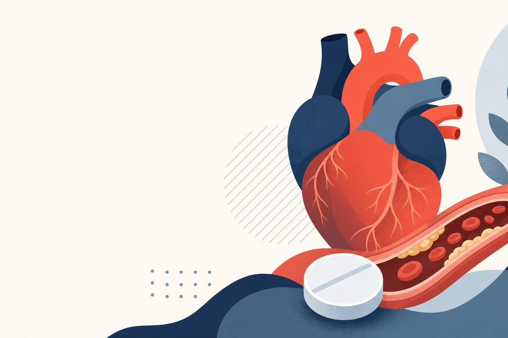

Key Takeaways
- About 86 million U.S. adults age 20 or older have total cholesterol above 200 mg/dL, and high cholesterol has no symptoms, so many people don't know their levels are too high.[1]
- The 2026 ACC/AHA multisociety dyslipidemia guideline retires and replaces the 2018 cholesterol guideline and covers high blood cholesterol, hypertriglyceridemia, and elevated lipoprotein(a).[2][28] According to the American College of Cardiology's summary of the guideline, LDL-C goals are back: <100 mg/dL for borderline or intermediate risk, <70 mg/dL for high risk, and <55 mg/dL for people with ASCVD at very high risk.[3]
- Statins are backed by large blinded trials. A 2026 meta-analysis of 19 blinded trials found that, apart from known effects on muscle and diabetes, only 4 of 66 other side effects listed on statin labels were more common with statins.[4] Blinded trials in people who had stopped statins also point to a real nocebo effect.[5]
- Beyond statins, ezetimibe, the PCSK9 antibody evolocumab, inclisiran (an injection given twice a year after the first two doses), and bempedoic acid are all FDA-labeled to lower LDL cholesterol.[6][7][8][9]
- Diet matters: in controlled trials, the plant-based Portfolio diet lowered LDL by about 17% on top of a standard cholesterol-lowering diet.[10] Sometimes healthy habits alone aren't enough to lower cholesterol, and your clinician may recommend medicine.[11]

Cholesterol is one of those topics where nearly everyone has heard the basics ("keep your numbers low," "avoid fried food," "take your statin"), but very few patients understand the nuances that actually determine cardiovascular risk. In clinical practice, clinicians see this knowledge gap every day. A patient's LDL is 145 mg/dL, and they've been told it's "a little high." But is it? The answer depends on their individual risk profile. In March 2026, the ACC, AHA and partner societies published a new dyslipidemia guideline that replaces the 2018 cholesterol guideline.[2]
The numbers are large. About 86 million U.S. adults age 20 or older have total cholesterol levels above 200 mg/dL, and nearly 25 million have levels above 240 mg/dL.[1] High cholesterol has no symptoms, so many people don't know their cholesterol is too high.[1]
This guide is designed to give you the same depth of information I would share with a colleague's family member: a thorough, honest overview of what your lipid panel means, when medication is truly necessary, what the latest evidence says about statins and newer drugs, and how to make lifestyle changes that actually move the needle. Whether you are managing an existing prescription refill or trying to understand a new diagnosis, this is your comprehensive reference.
Understanding Your Lipid Panel
A standard lipid panel is a blood test that measures several values, and you'll usually need to fast for 9 to 12 hours beforehand.[12] Each value tells a different part of the story, and understanding them individually is the first step toward understanding your cardiovascular risk.
LDL Cholesterol ("Bad Cholesterol")
Low-density lipoprotein (LDL) is often called "bad" cholesterol because it is the main source of cholesterol buildup and blockage in the arteries.[12] That is why LDL cholesterol is described as the primary therapeutic lipid target for cardiovascular disease prevention.[10]
| Measure | Healthy Level (adults 20 and older) | Notes |
|---|---|---|
| Total cholesterol | Less than 200 mg/dL | The total amount of cholesterol in your blood |
| LDL cholesterol | Less than 100 mg/dL | Your clinician may set a different goal based on your overall risk |
| Non-HDL cholesterol | Less than 130 mg/dL | A separate healthy-level measure listed by MedlinePlus |
| HDL cholesterol | 60 mg/dL or higher is best | Considered low below 40 mg/dL in men and below 50 mg/dL in women |
| Triglycerides | Below 150 mg/dL | See the triglycerides section below for higher ranges |
Healthy levels from MedlinePlus (National Library of Medicine).[12]
HDL Cholesterol ("Good Cholesterol")
High-density lipoprotein (HDL) is often called "good" cholesterol because it helps remove cholesterol from your arteries. An HDL of 60 mg/dL or higher is best; levels below 40 mg/dL in men or 50 mg/dL in women are considered low.[12] Raising HDL with a drug has not automatically meant fewer heart attacks: in the AIM-HIGH trial, adding niacin to statin therapy in people with heart disease and LDL below 70 mg/dL raised HDL but gave no additional clinical benefit over 36 months.[13]
Triglycerides
Triglycerides are a type of fat in the blood. For adults, a healthy level is below 150 mg/dL; 150 to 199 mg/dL is borderline high, 200 to 499 mg/dL is high, and above 500 mg/dL is very high. Diabetes, overweight and obesity, and drinking too much alcohol can raise triglycerides, and very high levels (more than 500 mg/dL) can raise the risk of sudden swelling of the pancreas (pancreatitis).[14]
Total Cholesterol
Total cholesterol is a measure of the total amount of cholesterol in your blood.[12] While it provides a general snapshot, it can be misleading: a patient with a high total cholesterol driven by a very high HDL is in a different situation than one with a high total cholesterol driven by elevated LDL. That's why we focus on the individual components, particularly LDL-C, when making treatment decisions.
The 2026 guideline's stated scope includes elevated lipoprotein(a), or Lp(a), alongside high blood cholesterol and hypertriglyceridemia.[2] Lp(a) is a common, genetically determined lipoprotein that is independently associated with heart attack, stroke, peripheral artery disease, and calcific aortic stenosis. Its levels are stable over time and minimally influenced by lifestyle. No approved drug yet targets Lp(a) specifically, so management currently focuses on aggressive control of traditional risk factors, particularly LDL lowering with statins.[15] According to the American College of Cardiology's summary of the 2026 guideline, Lp(a) should be measured at least once in adulthood, and because lifestyle changes minimally affect Lp(a) levels, repeat testing is generally not needed.[3] Ask your clinician whether an Lp(a) test makes sense for you.
Why Cholesterol Matters: Atherosclerosis and Cardiovascular Risk
To understand why we treat cholesterol so aggressively, you need to understand what happens inside your arteries over decades of exposure to elevated LDL.
Atherosclerosis begins when LDL particles penetrate the inner lining (endothelium) of an artery and become oxidized. This triggers an inflammatory cascade: white blood cells migrate to the area, engulf the oxidized LDL, and transform into foam cells. Over time, these foam cells accumulate into fatty streaks, then into fibrous plaques with a lipid-rich core covered by a thin fibrous cap. This process begins silently and progresses for decades before producing symptoms.
The danger isn't gradual narrowing alone. The most life-threatening event occurs when a vulnerable plaque ruptures, exposing its contents to the bloodstream and triggering a blood clot (thrombus) that can suddenly block the artery. This is the mechanism behind most heart attacks and many strokes, and it explains why an artery that was only partly narrowed can become blocked without warning.
This is why the length of time your arteries are exposed to LDL matters, not just today's number. As Roger Blumenthal, MD, chair of the 2026 guideline writing committee, put it: "Lower [LDL-C] for longer, just like lower blood pressure for longer, results in much greater protection against future heart attack and stroke risk."[3]
What's New: The 2026 ACC/AHA Dyslipidemia Guideline
The 2026 ACC/AHA multisociety Guideline on the Management of Dyslipidemia was published on March 13, 2026. It retires and replaces the 2018 Guideline on the Management of Blood Cholesterol, and its focus is the evaluation, management, and monitoring of people with dyslipidemias, including high blood cholesterol, hypertriglyceridemia, and elevated lipoprotein(a). Its evidence review covered studies identified in a literature search run from October to December 2024.[2] Here is what matters most for patients:
According to the American College of Cardiology's summary of the 2026 guideline, LDL-C and non-HDL cholesterol treatment goals are back to guide lipid-lowering therapy. The summary lists an LDL-C goal of <100 mg/dL for people at borderline or intermediate risk, <70 mg/dL for those at high risk, and <55 mg/dL for people with ASCVD who are at very high risk of ASCVD events.[3] The healthy levels in the lipid panel table above are general reference values for adults.[12] Ask your clinician which risk group and LDL-C goal apply to you and how they were chosen.
According to the ACC's summary, the guideline recommends the newer PREVENT-ASCVD equations instead of the older Pooled Cohort Equations for 10- and 30-year risk assessment in primary prevention for adults aged 30 to 79. The summary describes LDL-lowering therapy as reasonable at a borderline 10-year PREVENT-ASCVD risk of 3% to <5%, and as recommended at an intermediate 10-year risk of 5% to <10%.[3]
The U.S. Preventive Services Task Force (recommendation released August 23, 2022, before the 2026 guideline) recommends that clinicians prescribe a statin for primary prevention in adults aged 40 to 75 who have 1 or more cardiovascular risk factors (dyslipidemia, diabetes, hypertension, or smoking) and an estimated 10-year risk of a cardiovascular event of 10% or greater (grade B). For the same group with a 10-year risk of 7.5% to less than 10%, it recommends selectively offering a statin, because the likelihood of benefit is smaller (grade C). For adults 76 or older, it found the evidence insufficient. The USPSTF notes that the ACC/AHA Pooled Cohort Equations may be used to estimate 10-year risk, but that many validation studies show they overpredict risk in broad populations.[16]
Other Key Updates
- Coronary artery calcium (CAC) scoring: the ACC's summary says selective use of a noncontrast CAC scan is recommended for men over 40 and women over 45 with borderline or intermediate 10-year risk, and that any amount of CAC supports an LDL-C goal of <100 mg/dL, with lower targets for higher amounts of calcium.[3]
- Special populations: examples in the ACC's summary include starting lipid-lowering therapy for people 40 or older with chronic kidney disease (stage 3 or higher), HIV, or type 1 or type 2 diabetes; continuing it during cancer treatment unless contraindicated; and deferring most lipid-lowering therapies during conception, pregnancy, and lactation.[3]
- Bempedoic acid (Nexletol) received its initial U.S. approval in 2020.[9]
- Inclisiran (Leqvio) received its initial U.S. approval in 2021.[8]
- Both are covered in detail in the "Beyond Statins" section below.
Statin Therapy: How They Work, Doses, and Side Effects
Statins are among the most extensively studied drugs in medicine. A 2026 meta-analysis pooled 19 double-blind trials that compared a statin with placebo in 123,940 participants, followed for a median of 4.5 years.[4]
How Statins Work
Statins inhibit HMG-CoA reductase, the rate-limiting enzyme in the liver's cholesterol production. The atorvastatin (Lipitor) label describes how this lowers blood cholesterol and increases the number of LDL receptors on liver cells, which take up and break down LDL from the bloodstream.[17]
Statin Doses and Expected LDL Lowering
| Statin | Adult Dose Range (FDA label) | Average LDL Change in Label Studies |
|---|---|---|
| Atorvastatin (Lipitor) | 10 mg to 80 mg once daily | -39% at 10 mg to -60% at 80 mg[17] |
| Rosuvastatin (Crestor) | 5 mg to 40 mg once daily | -45% at 5 mg to -63% at 40 mg[18] |
| Simvastatin (Zocor) | 20 mg to 40 mg once daily (80 mg restricted to long-term users without muscle toxicity) | -38% at 20 mg; -41% at 40 mg[19] |
| Pravastatin | Recommended starting dose 40 mg to 80 mg once daily | -22% at 10 mg to -37% at 80 mg[20] |
Higher doses and stronger statins lower LDL more. Which statin and dose you take depends on your risk and how you tolerate it, and your clinician will choose with you.
Separating Real Side Effects from the Nocebo Effect
A common patient concern is the belief that statins routinely cause debilitating muscle pain. Let me be direct about what the evidence shows.
A 2026 meta-analysis of 19 placebo-controlled trials with 123,940 participants found that, in addition to previously reported effects on muscle outcomes and diabetes, only 4 of 66 further side effects attributed to statins in product labels were more common with statins: abnormal liver tests (two categories), urinary composition changes, and edema, each at low absolute rates. The blinded data did not support a causal link for most label-listed conditions, including cognitive impairment, depression, sleep disturbance, and peripheral neuropathy, and the researchers concluded that labels should be revised.[4]
The SAMSON and StatinWISE trials were personalized N-of-1 studies in which each participant was randomized to multiple periods of statin and placebo, with regular symptom assessments. Together they support a significant nocebo effect, where the act of taking a tablet, even a placebo, causes genuine side effects.[5] In StatinWISE, 200 people who had stopped or were considering stopping statins because of muscle symptoms rotated through two-month blinded periods of atorvastatin 20 mg or placebo, and overall there was no difference in muscle symptom scores between statin and placebo periods.[21]
Perhaps most importantly, up to half of the patients in these trials were able to successfully restart statins after taking part, despite previously having been statin intolerant.[5] If you have stopped a statin due to muscle symptoms, I encourage you to discuss a rechallenge with your physician, potentially with a different statin or a lower dose.
That said, true statin-related muscle injury does exist. The atorvastatin label lists risk factors for myopathy: age 65 or older, uncontrolled hypothyroidism, kidney impairment, use with certain other drugs (including other lipid-lowering therapies), and higher doses. Rhabdomyolysis can lead to acute kidney injury and, rarely, death, and the label tells patients to promptly report any unexplained muscle pain, tenderness, or weakness.[17] If you develop unexplained severe muscle pain, weakness, or dark-colored urine while on a statin, seek medical evaluation promptly.
Beyond Statins: The Expanding Cholesterol Medication Toolkit
Statins alone are not enough for some patients, particularly those with familial hypercholesterolemia, statin intolerance, or LDL that stays above goal. Several non-statin medicines are now available.
Ezetimibe (Zetia)
How it works: Ezetimibe reduces blood cholesterol by inhibiting the absorption of cholesterol by the small intestine. This complements statins, which reduce cholesterol production.[6]
Efficacy: In the label's studies, adding ezetimibe to ongoing statin therapy lowered LDL by 25% from the treated baseline, compared with 4% when placebo was added. On its own, it lowered LDL by 18% versus a 1% rise with placebo.[6]
Practical notes: Oral, 10 mg once daily, with or without food. It is labeled for use with a statin, or alone when additional LDL-lowering therapy is not possible.[6]
PCSK9 Inhibitors: Evolocumab (Repatha) and Alirocumab (Praluent)
How they work: These monoclonal antibodies block PCSK9, a protein that degrades LDL receptors on the liver surface. By inhibiting PCSK9, more LDL receptors remain active, pulling more LDL out of the blood.
Efficacy: In label trials, evolocumab lowered LDL 71% more than placebo at 12 weeks in one trial, and 55% more than placebo at 52 weeks with monthly dosing.[7] Alirocumab lowered LDL 58% more than placebo at 24 weeks.[22] In their outcome trials (FOURIER for evolocumab and ODYSSEY OUTCOMES for alirocumab), both significantly reduced the risk of the primary composite of major cardiovascular events.[7][22]
Current label: The Repatha label (revised July 2026) lists reducing the risk of major adverse cardiovascular events in adults at increased risk for these events, and lowering LDL as an adjunct to diet and exercise in adults with hypercholesterolemia.[7]
Practical notes: Subcutaneous injection. Repatha is 140 mg every 2 weeks or 420 mg once monthly, and can be given at home by you or a caregiver if your healthcare provider decides that is appropriate.[7] Praluent starts at 75 mg every 2 weeks or 300 mg every 4 weeks.[22]
Inclisiran (Leqvio)
How it works: A small interfering RNA (siRNA) directed to the messenger RNA for PCSK9 in the liver. Rather than blocking the protein after it's made (like evolocumab and alirocumab), inclisiran reduces how much of the protein is produced.[8]
Efficacy: In the label's two main trials, LDL fell 52% and 50% more than with placebo at Day 510.[8]
Current label: The Leqvio label (revised August 2026) lists it as an adjunct to diet and exercise to lower LDL in adults with hypercholesterolemia, and in patients 12 and older with heterozygous or homozygous familial hypercholesterolemia. The label's statement that lowering LDL reduces major cardiovascular events refers to trials of statins and of PCSK9 antibodies added to statins, not to inclisiran itself.[8]
Practical notes: A healthcare professional gives 284 mg as a single injection under the skin initially, again at 3 months, and then every 6 months.[8] For patients who struggle with daily pills or frequent injections, twice-yearly dosing can be easier to keep up with.
Bempedoic Acid (Nexletol)
How it works: Bempedoic acid is an ATP-citrate lyase (ACL) inhibitor that lowers LDL by inhibiting cholesterol synthesis in the liver. It must be activated by an enzyme (ACSVL1) that is expressed primarily in the liver.[9] In trials it has been associated with a low incidence of muscle-related adverse events.[23]
Efficacy: The CLEAR Outcomes trial enrolled 13,970 patients who were unable or unwilling to take statins because of side effects. Bempedoic acid 180 mg daily lowered LDL by 21.1 percentage points more than placebo at 6 months, and fewer patients had a major cardiovascular event (11.7% vs 13.3%; hazard ratio 0.87).[23]
Practical notes: Oral, 180 mg once daily.[9] Particularly valuable for statin-intolerant patients. In CLEAR Outcomes, gout (3.1% vs 2.1%) and gallstones (2.2% vs 1.2%) were more common than with placebo.[23] The label warns about rising uric acid and gout and about tendon rupture.[9]
Icosapent Ethyl (Vascepa) for Elevated Triglycerides
How it works: A purified prescription form of the omega-3 fatty acid EPA.
Efficacy: In the REDUCE-IT trial, icosapent ethyl added to statin therapy lowered the risk of the primary composite of major cardiovascular events (hazard ratio 0.75) over a median follow-up of 4.9 years.[24]
Practical notes: The label dose is 4 grams per day, taken as two 1-gram capsules twice daily with food. It is labeled as an add-on to maximally tolerated statin therapy to reduce cardiovascular events in adults with triglycerides of 150 mg/dL or higher and established cardiovascular disease, or diabetes plus 2 or more other risk factors, and as an adjunct to diet in adults with severe triglycerides of 500 mg/dL or higher.[24] This is not a general fish oil supplement.
Decision Framework: Routine Refill, Talk to Your Doctor, or Seek Emergency Care
One of the most practical things I can offer is a framework for when you need action, and what kind. Here is how I guide patients in clinical care:
| Scenario | Recommended Action | Rationale |
|---|---|---|
| Stable on current statin/cholesterol medication with LDL at goal, no new symptoms, due for refill | ✅ Routine refill: continue current therapy | Staying on therapy keeps LDL lowered. Do not stop or change medication without physician guidance. |
| Mild muscle aches after starting or changing a statin; no weakness, no dark urine | 📋 Schedule a conversation with your doctor within 1–2 weeks | In blinded trials, side effects were no more common on statins than on placebo, and many people who had stopped statins were able to restart.[5] Options include reassurance, a different statin, or a dose change. Do not stop the statin without medical advice. |
| LDL not at goal despite current therapy; risk factors present (diabetes, family history, smoking) | 📋 Discuss intensifying therapy at your next appointment | Options include a higher statin dose or stronger statin, adding ezetimibe, or considering a PCSK9 antibody, inclisiran, or bempedoic acid. According to the ACC's summary of the 2026 guideline, LDL-C treatment goals are back to guide therapy.[3] |
| New diagnosis of very high triglycerides (>500 mg/dL) | ⚠️ Contact your physician promptly (same week) | Triglycerides above 500 mg/dL can raise the risk of pancreatitis.[14] Diet changes and prescription treatment, such as icosapent ethyl (labeled for triglycerides of 500 mg/dL or higher), may be needed.[24] |
| Severe muscle pain with weakness, dark or tea-colored urine, or fever while on a statin | 🚨 Seek emergency care immediately | These may indicate rhabdomyolysis, a rare but serious breakdown of muscle that can cause acute kidney injury. The statin label says to stop the drug if markedly elevated CK levels occur or myopathy is diagnosed or suspected.[17] |
| Chest pain, sudden weakness on one side, difficulty speaking, or severe headache | 🚨 Call 911 immediately | These are signs of a heart attack or stroke, the very events that cholesterol management aims to prevent. Every minute matters. Do not drive yourself to the hospital. |
Lifestyle Modifications: What Actually Moves the Numbers
Every patient treated for cholesterol hears the same message: medication works best when it's built on a foundation of healthy habits. Lifestyle changes are never "instead of" medication for patients at significant risk, but they are always "in addition to" it. Sometimes healthy habits alone aren't enough to lower cholesterol.[11] Here's what the evidence supports:
Dietary Modifications
- Reduce saturated fat, found mostly in red meat and full-fat dairy: eating less can help lower your LDL[11]
- Increase soluble fiber (oatmeal, kidney beans, Brussels sprouts, apples, pears): it helps block some cholesterol from being absorbed into your bloodstream[11]
- Add plant sterols/stanols (in fortified foods and supplements): intakes of 0.6 to 3.3 g/day lowered LDL by an average of 6% to 12% in a meta-analysis of randomized studies[25]
- Consider a Portfolio diet pattern (nuts, plant protein, viscous fiber, plant sterols): it lowered LDL by about 17% on top of a standard cholesterol-lowering diet in controlled trials[10]
- Eliminate trans fats: they can raise overall cholesterol and heart disease risk, and may appear on labels as "partially hydrogenated vegetable oil"[11]
Physical Activity
- Regular exercise can help raise HDL ("good") cholesterol; work up to at least 30 minutes, such as brisk walking, five days a week[11]
Weight Management
- Even a small amount of extra weight can raise your cholesterol levels, and small, steady steps toward weight loss improve heart health over time[11]
Smoking Cessation
- Quitting smoking can help raise your HDL cholesterol, and within one year of quitting, your risk of heart disease is cut in half compared with someone who still smokes[11]
Patients frequently ask about red yeast rice, garlic, niacin, and fish oil for cholesterol. Let me be straightforward: some red yeast rice products contain monacolin K, which is chemically identical to the prescription drug lovastatin, and some may be contaminated with citrinin, a substance that may cause kidney damage. Garlic supplements may lower cholesterol, but the effect is modest.[26] Omega-3 supplements don't lower LDL cholesterol.[11] Niacin raised HDL in the AIM-HIGH trial but added no clinical benefit to statin therapy.[13] In general, if a supplement sounds too good to be true for cholesterol, it is.
Red Flags: When to Seek Emergency Care
- Chest pain, pressure, or tightness, especially if it spreads to the arm, jaw, or back; may indicate a heart attack
- Sudden weakness or numbness on one side of the body: a hallmark of stroke
- Difficulty speaking or sudden confusion: another stroke warning sign
- Severe, unexplained muscle pain with dark or tea-colored urine: may indicate rhabdomyolysis (a rare statin complication requiring emergency treatment)
- Sudden severe abdominal pain with very high triglycerides: may indicate acute pancreatitis
- Severe allergic reaction to any medication (rash, swelling, difficulty breathing)
- Sudden severe headache with no known cause: may indicate hemorrhagic stroke
High cholesterol itself is a "silent" condition: it has no symptoms, so many people don't know their cholesterol is too high.[1] This is precisely what makes it dangerous and why proactive screening, treatment, and adherence matter so much. The symptoms listed above are not from cholesterol itself but from the downstream consequences of untreated or undertreated atherosclerotic disease. By the time symptoms appear, significant damage has already occurred.
Frequently Asked Questions
Both play a role. Statins do have real effects on muscle, which a 2026 meta-analysis of 19 blinded trials with 123,940 participants counted among previously known effects; beyond muscle and diabetes, only 4 of 66 other label-listed side effects were more common with statins.[4] At the same time, the SAMSON and StatinWISE N-of-1 trials support a significant nocebo effect, where simply taking a tablet, even a placebo, causes genuine symptoms, and up to half of participants who had been statin intolerant successfully restarted statins afterward.[5] If you've stopped a statin due to muscle symptoms, consider discussing a rechallenge with your physician.
Not on your own. In many cases your cholesterol is at goal because the statin is working. Statins do not cure the underlying tendency toward high cholesterol; they manage it while you take them, so stopping usually lets LDL rise again. Never discontinue a statin without discussing it with your physician first.
PCSK9 inhibitors are injectable antibodies, evolocumab (Repatha) and alirocumab (Praluent), that block a protein which breaks down LDL receptors. In label trials they lowered LDL by 55% to 71% (evolocumab) and 58% (alirocumab) more than placebo, and both reduced major cardiovascular events in outcome trials.[7][22] Both are labeled to reduce cardiovascular events in adults at increased risk and to lower LDL in adults with hypercholesterolemia, including familial hypercholesterolemia.[7][22] Inclisiran (Leqvio) also targets PCSK9, but works differently, by reducing how much PCSK9 the liver makes.[8] If your LDL remains above target after optimizing statin and ezetimibe, ask your physician about these options.
Meaningfully, for many people. The Portfolio diet (nuts, plant protein, viscous fiber and plant sterols) lowered LDL by about 17% on top of a standard cholesterol-lowering diet in controlled trials.[10] Plant sterols or stanols at 0.6 to 3.3 g/day lowered LDL by an average of 6% to 12%.[25] Eating less saturated fat, adding soluble fiber, and avoiding trans fats help lower LDL; regular exercise and quitting smoking can raise HDL.[11] However, healthy habits alone are sometimes not enough to lower cholesterol.[11] For patients at high cardiovascular risk or with very elevated LDL, your clinician may recommend adding medication.
Inclisiran (Leqvio) is a small interfering RNA (siRNA) therapy directed to the messenger RNA for PCSK9, so the liver makes less PCSK9, rather than blocking the protein after it is made as Repatha and Praluent do. The major advantage is the dosing schedule: a healthcare professional gives 284 mg by injection initially, again at 3 months, and then every 6 months.[8] Repatha and Praluent are given every 2 weeks or every 4 weeks or monthly.[7][22] In its main trials, inclisiran lowered LDL by 50% to 52% more than placebo. Its label lists use as an adjunct to diet and exercise to lower LDL in adults with hypercholesterolemia; its label statement on reduced cardiovascular events refers to trials of other LDL-lowering drugs.[8]
Genetics play a significant role in cholesterol levels for many patients. Familial hypercholesterolemia (FH) is an inherited condition. A meta-analysis of about 11 million people estimated that heterozygous FH affects about 1 in 313 people in the general population, but about 1 in 15 people with premature heart disease and about 1 in 14 people with severe hypercholesterolemia (LDL of 190 mg/dL or higher); prevalence is unknown in most countries.[27] FH has heterozygous and homozygous forms, and LDL-lowering medicines such as PCSK9 antibodies and inclisiran are labeled for familial hypercholesterolemia.[7][8] If you have a family history of very high cholesterol or early heart attacks, ask your physician about screening for FH.
References
- Centers for Disease Control and Prevention (CDC). High Cholesterol Facts. Last updated October 24, 2024. Accessed November 15, 2026. https://www.cdc.gov/cholesterol/data-research/facts-stats/index.html
- Blumenthal RS, Morris PB, Gaudino M, et al. 2026 ACC/AHA/AACVPR/ABC/ACPM/ADA/AGS/APhA/ASPC/NLA/PCNA Guideline on the Management of Dyslipidemia: A Report of the American College of Cardiology/American Heart Association Joint Committee on Clinical Practice Guidelines. Journal of the American College of Cardiology. 2026;87(19):2624-2757. Practice guideline (PubMed record). PMID 41824590. https://pubmed.ncbi.nlm.nih.gov/41824590/
- American College of Cardiology. ACC, AHA Release New Clinical Guideline For Managing Dyslipidemia. Journal Scan, March 13, 2026. Accessed November 15, 2026. https://www.acc.org/latest-in-cardiology/journal-scans/2026/03/13/15/20/acc-aha-release-new-clinical-guideline-for-managing-dyslipidemia
- Assessment of adverse effects attributed to statin therapy in product labels: a meta-analysis of double-blind randomised controlled trials. Lancet. 2026;407(10529):689-703. Meta-analysis. PMID 41655587. https://pubmed.ncbi.nlm.nih.gov/41655587/
- Howard JP, Wood FA, Francis DP. Why Do I Get Side Effects? Personalized (N-of-1) Trials for Statin Intolerance and the Nocebo Effect. Harvard Data Science Review. 2022. PMID 38344133. https://pmc.ncbi.nlm.nih.gov/articles/PMC10857873/
- Organon LLC. ZETIA (ezetimibe) tablets. Prescribing information. Revised 2/2024. DailyMed. Accessed November 15, 2026. https://dailymed.nlm.nih.gov/dailymed/drugInfo.cfm?setid=174e45e0-45bb-48b7-9e60-8f6cfc1d22bb
- Amgen. REPATHA (evolocumab) injection. Prescribing information. Revised 7/2026. DailyMed. Accessed November 15, 2026. https://dailymed.nlm.nih.gov/dailymed/drugInfo.cfm?setid=cd61e902-166d-4aa6-9f3c-a18c1008d07e
- Novartis Pharmaceuticals Corporation. LEQVIO (inclisiran) injection. Prescribing information. Revised 8/2026. DailyMed. Accessed November 15, 2026. https://dailymed.nlm.nih.gov/dailymed/drugInfo.cfm?setid=6fc0afca-4513-4c35-b594-6544aee29a44
- Esperion Therapeutics. NEXLETOL (bempedoic acid) tablets. Prescribing information. Revised 1/2026. DailyMed. Accessed November 15, 2026. https://dailymed.nlm.nih.gov/dailymed/drugInfo.cfm?setid=88d06d89-a3da-40b4-b273-8f4f7d56c4c9
- Chiavaroli L, Nishi SK, Khan TA, et al. Portfolio Dietary Pattern and Cardiovascular Disease: A Systematic Review and Meta-analysis of Controlled Trials. Progress in Cardiovascular Diseases. 2018;61(1):43-53. PMID 29807048. https://pubmed.ncbi.nlm.nih.gov/29807048/
- Mayo Clinic. Top 5 lifestyle changes to improve your cholesterol. Page dated January 21, 2026. Accessed November 15, 2026. https://www.mayoclinic.org/diseases-conditions/high-blood-cholesterol/in-depth/reduce-cholesterol/art-20045935
- MedlinePlus, National Library of Medicine. Cholesterol Levels: What You Need to Know. Last updated October 7, 2026. Accessed November 15, 2026. https://medlineplus.gov/cholesterollevelswhatyouneedtoknow.html
- AIM-HIGH Investigators; Boden WE, Probstfield JL, Anderson T, et al. Niacin in patients with low HDL cholesterol levels receiving intensive statin therapy. New England Journal of Medicine. 2011;365(24):2255-2267. PMID 22085343. https://pubmed.ncbi.nlm.nih.gov/22085343/
- National Heart, Lung, and Blood Institute (NHLBI). High Blood Triglycerides. Last updated April 19, 2023. Accessed November 15, 2026. https://www.nhlbi.nih.gov/health/high-blood-triglycerides
- McGinnis T, Saxon DR. Approach to the patient with elevated lipoprotein(a). Journal of Clinical Endocrinology and Metabolism. 2026;111(11):3286-3295. Review. PMID 42460806. https://pubmed.ncbi.nlm.nih.gov/42460806/
- U.S. Preventive Services Task Force. Statin Use for the Primary Prevention of Cardiovascular Disease in Adults: Preventive Medication. Final recommendation, August 23, 2022. Accessed November 15, 2026. https://www.uspreventiveservicestaskforce.org/uspstf/recommendation/statin-use-in-adults-preventive-medication
- Viatris Specialty LLC. LIPITOR (atorvastatin calcium) tablets. Prescribing information. Revised 4/2024. DailyMed. Accessed November 15, 2026. https://dailymed.nlm.nih.gov/dailymed/drugInfo.cfm?setid=a60cc18b-0631-4cf0-b021-9f52224ece65
- AstraZeneca Pharmaceuticals LP. CRESTOR (rosuvastatin) tablets. Prescribing information. Revised 9/2026. DailyMed. Accessed November 15, 2026. https://dailymed.nlm.nih.gov/dailymed/drugInfo.cfm?setid=325a5d0e-9a72-4015-9fcd-1655fb504cee
- Organon LLC. ZOCOR (simvastatin) tablets. Prescribing information. Revised 8/2023. DailyMed. Accessed November 15, 2026. https://dailymed.nlm.nih.gov/dailymed/drugInfo.cfm?setid=8f55d5de-5a4f-4a39-8c84-c53976dd6af9
- Aurobindo Pharma Limited. Pravastatin sodium tablets. Prescribing information. Revised 12/2024. DailyMed. Accessed November 15, 2026. https://dailymed.nlm.nih.gov/dailymed/drugInfo.cfm?setid=b06ed801-ddee-4f56-924a-59fcb451eae6
- Herrett E, Williamson E, Brack K, et al. Statin treatment and muscle symptoms: series of randomised, placebo controlled n-of-1 trials. BMJ. 2021;372:n135. Randomized controlled trial. PMID 33627334. https://pubmed.ncbi.nlm.nih.gov/33627334/
- Sanofi-Aventis U.S. LLC. PRALUENT (alirocumab) injection. Prescribing information. Revised 10/2025. DailyMed. Accessed November 15, 2026. https://dailymed.nlm.nih.gov/dailymed/drugInfo.cfm?setid=446f6b5c-0dd4-44ff-9bc2-c2b41f2806b4
- Nissen SE, Lincoff AM, Brennan D, et al. Bempedoic Acid and Cardiovascular Outcomes in Statin-Intolerant Patients. New England Journal of Medicine. 2023;388(15):1353-1364. Randomized controlled trial (CLEAR Outcomes). PMID 36876740. https://pubmed.ncbi.nlm.nih.gov/36876740/
- Amarin Pharma Inc. VASCEPA (icosapent ethyl) capsules. Prescribing information. Revised 3/2026. DailyMed. Accessed November 15, 2026. https://dailymed.nlm.nih.gov/dailymed/drugInfo.cfm?setid=9c1a2828-1583-4414-ab22-a60480e8e508
- Ras RT, Geleijnse JM, Trautwein EA. LDL-cholesterol-lowering effect of plant sterols and stanols across different dose ranges: a meta-analysis of randomised controlled studies. British Journal of Nutrition. 2014;112(2):214-219. PMID 24780090. https://pubmed.ncbi.nlm.nih.gov/24780090/
- National Center for Complementary and Integrative Health (NCCIH). 8 Tips: High Cholesterol and Dietary Supplements. Site last updated October 6, 2026. Accessed November 15, 2026. https://www.nccih.nih.gov/health/tips/high-cholesterol-and-dietary-supplements?nav=govd
- Beheshti SO, Madsen CM, Varbo A, Nordestgaard BG. Worldwide Prevalence of Familial Hypercholesterolemia: Meta-Analyses of 11 Million Subjects. Journal of the American College of Cardiology. 2020;75(20):2553-2566. PMID 32439005. https://pubmed.ncbi.nlm.nih.gov/32439005/
- Blumenthal RS, Morris PB, Gaudino M, et al. 2026 ACC/AHA/AACVPR/ABC/ACPM/ADA/AGS/APhA/ASPC/NLA/PCNA Guideline on the Management of Dyslipidemia. Journal of the American College of Cardiology. 2026;87(19):2624-2757. PMID 41824590. doi:10.1016/j.jacc.2025.11.016. https://pubmed.ncbi.nlm.nih.gov/41824590/